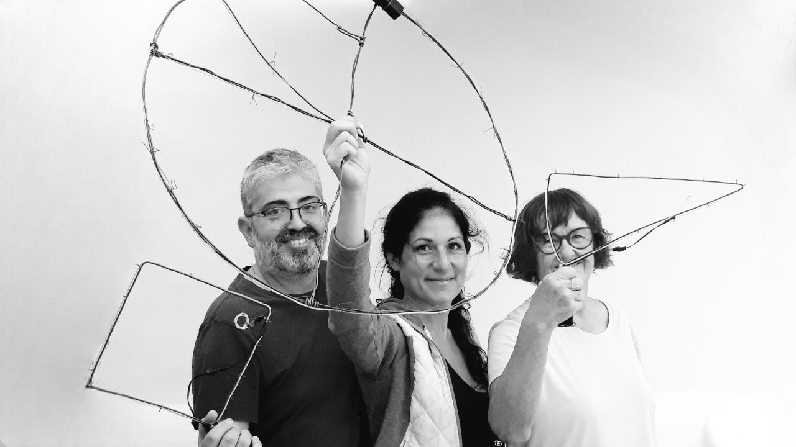

¿Quiénes somos?


Compañía teatral LA TEGALA Dirección ANTONIO ORELLANA
La Tegala Escénica fundada en 2024 en Haría, Lanzarote, toma su nombre de una palabra de origen prehispánico que representa un redil o refugio improvisado de piedra para vigilancia y resguardo del viento. Esta esencia simbólica refleja los valores fundamentales de la compañía: ser un espacio de protección, reunión y creación donde el arte escénico pueda desarrollarse, como un lugar de encuentro para la comunidad y las ideas.
Bajo la dirección de Antonio Orellana, reconocido dramaturgo, actor y director, La Tegala se propone ser un espacio de creación que combina el talento local con una sólida experiencia profesional para ofrecer montajes teatrales de alto impacto cultural y artístico.
Orellana aporta a este proyecto más de tres décadas de experiencia en las artes escénicas. En Lanzarote, su labor ha sido fundamental en el impulso del teatro local, con proyectos como la Escuela de Teatro de Haría desde 2021, o la Escuela de Teatro Aspercan Lanzarote en 2023, especializada en inclusión a través del teatro. Y otros proyectos culturales en Canarias como productor, autor y director teatral.
* La Asociación Cultural La Tegala Escénica, inspirada por este legado y el entusiasmo de la comunidad teatral insular, tiene como misión explorar nuevas formas de expresión artística y fortalecer el teatro isleño desde un enfoque profesional y comprometido. Este proyecto se erige como un círculo artístico que acoge, crea y transforma, consolidándose como un nuevo referente teatral en Lanzarote y las Islas Canarias.
* Licenciado en Filología Hispánica y Máster en Artes del Espectáculo Vivo (Premio Extraordinario) por la Universidad de Sevilla, completó su formación en el Instituto del Teatro de Sevilla y La Sapienza de Roma, trabajando bajo la guía de reconocidos maestros internacionales. A lo largo de su carrera, ha fundado y dirigido compañías teatrales en Madrid, País Vasco, Andalucía y Canarias, consolidando un perfil profesional polifacético que abarca la actuación, la dramaturgia y la dirección. Recibió el Premio de Letras Canarias Benito Pérez Armas, además de los premios nacionales Esperpento, ASSITEJ‑España, Escuela Navarra de Teatro, y más reconocimientos por su labor dramatúrgica y actoral como los premios de la Universidad de Sevilla 'Rafael de Cózar' y la Universidad de Cádiz ‘El Drag’. Como autor, ha publicado, estrenado y traducido a varios idiomas, más de 15 obras de teatro.